Inteligência Artificial Generativa e Multimodal
Revisão
- Perceptron
- Multicamadas
- LSTM
- Autoenconders
- Detecção de Imagem
Perceptron
- Primeiro modelo funcional de rede neural
- Resolve problemas linearmente separáveis
- Base das redes modernas
Características
- Entradas ponderadas.
- Função de ativação.
- Saída binária.
Modelo

Arquitetura Multicamadas

- Camada de entrada
- Camadas ocultas
- Camada de saída
Escolhendo Arquiteturas
- Mais camadas → maior abstração
- Maior custo computacional
- Mais neurônios → maior capacidade
- Regularização torna-se essencial
- Mede a capacidade da rede
- Redes modernas possuem milhões ou bilhões
Exemplos de arquiteturas
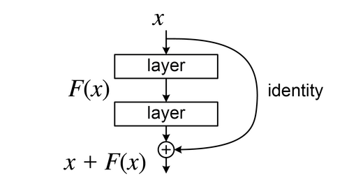
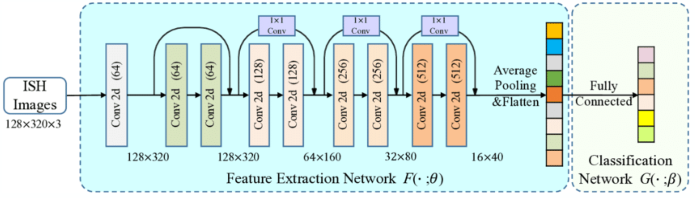
LSTM e Gate Recurrent Units (GRU)
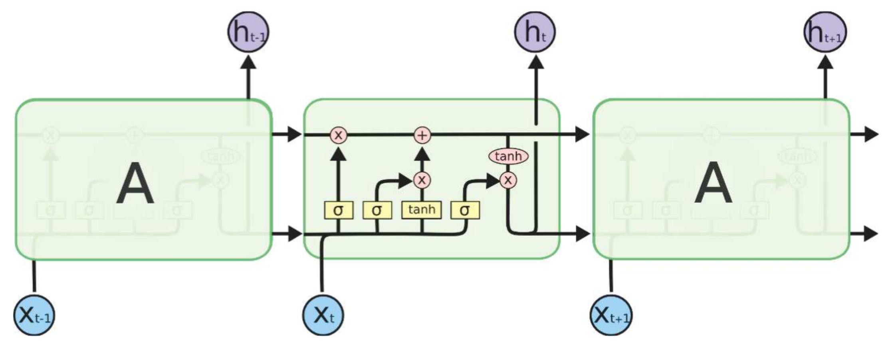
- Resolvem gradientes desaparecendo
- Excelente para séries temporais e NLP
Autoenconders

Unet
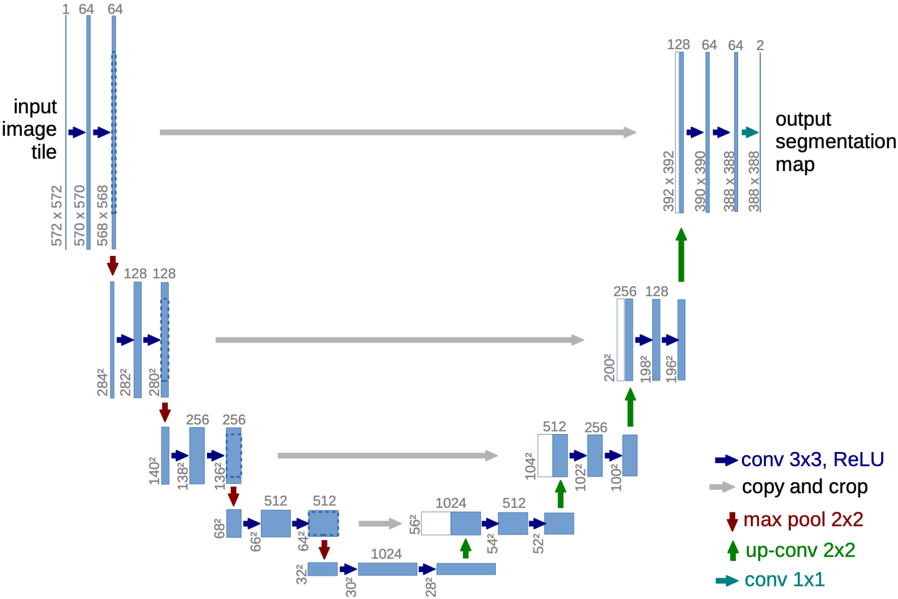
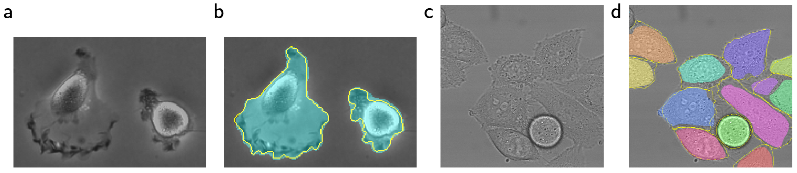
Detecção de imagens - Yolo
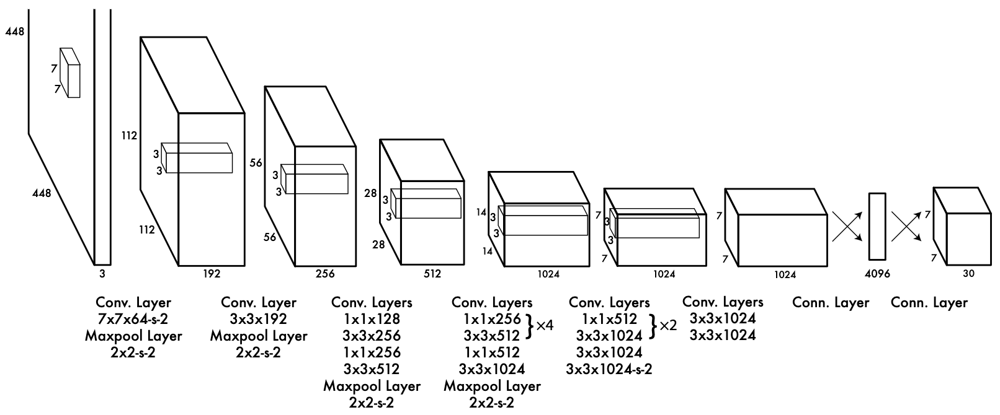

Generative Adversarial Networks (GANs)
Imagens para imagens
Inteligência artificial generativa
- Criar conteúdo novo, baseado em padrões identificados nos conjuntos de dados de treinamento.
- Jogos
- Texto
- Vídeos
- Audio
- Vibe coding
Evolução dos Modelos Generativos
2014: Revolução na Geração de Dados
Variational Autoencoders (VAE) e Generative Adversarial Networks (GANs) - geração "realista" de dados complexos, especialmente imagens.
Deep Generative Modeling
- Geração de imagens sintéticas de alta qualidade
- Aprendizado de distribuições complexas
- Aplicações em arte, medicina e visão computacional
2017–2018: A Era dos Transformers
Transformer - Generative Pre-trained Transformers (GPT, 2018)
Classe de IA generativa
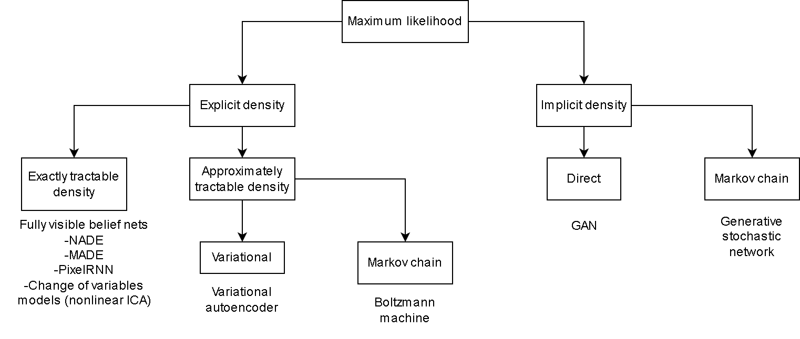
GANs na prática
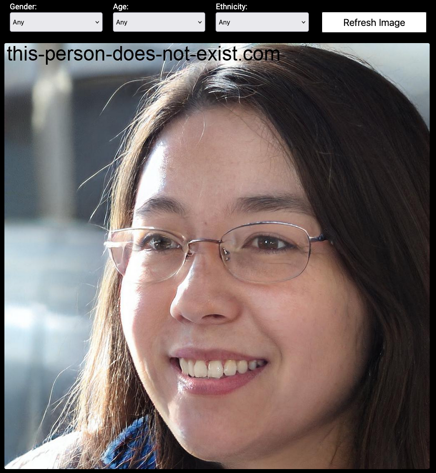
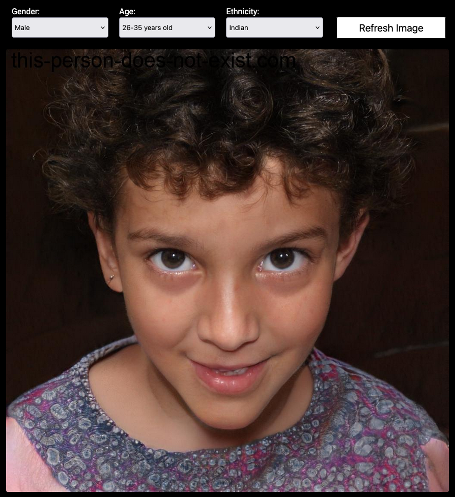
GANs
- 2 redes:
- Gerador: tenta gerar amostras que pareçam “reais”
- Discriminador: tenta determinar se uma amostra é “real” ou não
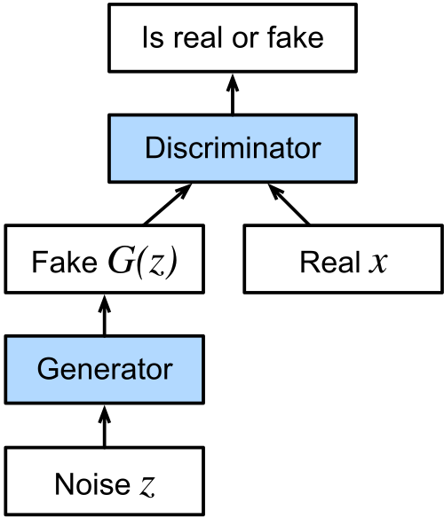
Normalmente utilizado para a geração de imagens
GANs - funcionamento
- A saída da rede deve ser uma imagem
- Convolução descendente
- Convolução transposta ascendente
- Entrada: ruído gerado aleatoriamente
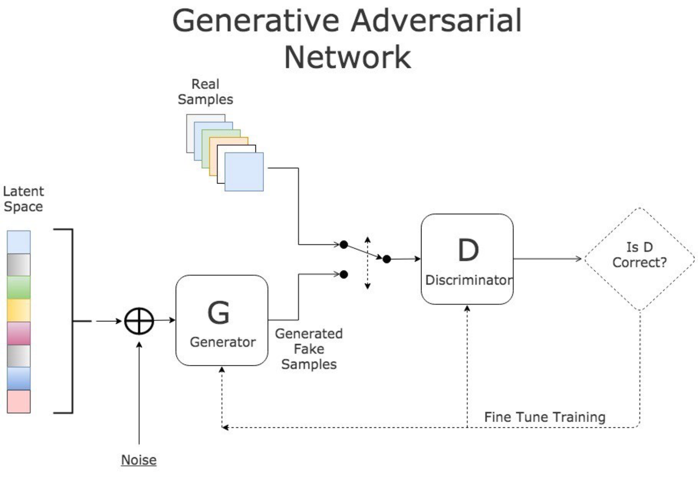
Gerador/discriminador - arquitetura (images)
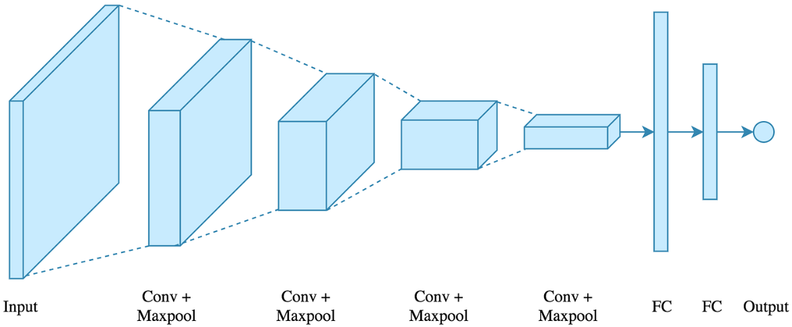
- O gerador é normalmente uma Unet
- O discriminador é normalmente uma CNN
Treinamento
- Duas funções de perda (loss)
- O discriminador avalia sua capacidade de distinguir as amostras reais das geradas artificialmente
- O gerador avalia sua capacidade de enganar o discriminador, fazendo-o acreditar que as amostras geradas artificialmente são reais
- Treinamento
- Gerar um conjunto de imagens
- Classificar as imagens geradas e reais
- Calcular os gradientes para o discriminador e o gerador
- Ajustar os pesos das duas redes
Geração de texto
Embendings
RNNs
Tranfomers
Aprendizado por transferência
O que é um modelo de modelo de linguagem?
- Modelo que prevê a próxima palavra em uma sequência.
- Exemplo: "Eu quero um copo de ___"
- Aprende probabilidade de sequências de palavras.

Rede Neural para modelos de linguagem
- Representações densas (embeddings)
- Generalização melhor
- Aprendizado de padrões complexos
- Substituem contagem por aprendizado

Medindo probabilidades
Redes Neurais Recorrentes (RNN)

Treinando uma RNN

Gerando texto com uma RNN

GPT
- Os GTPs fazem parte da família dos LLMs (Large Language Models)
- Eles se baseiam em Transformers pré-treinados em conjuntos de dados gigantescos
- O princípio consiste em gerar a próxima palavra em uma sequência, estimando a distribuição das possíveis palavras seguintes
- A próxima palavra é escolhida por amostragem dessa distribuição
- O mecanismo de atenção é o elemento determinante dos Transformers
Mecanismo de atenção
- Cada palavra é projetada em três representações vetoriais
- Query: O que estou procurando?
- Key: O que eu ofereço?
- Value: Qual informação transmitir?
- O mecanismo mede a importância relativa entre as palavras da sequência.
- Cada palavra "olha" para todas as outras e decide em quais deve focar.
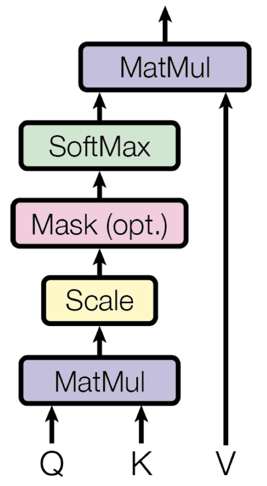
Exemplo - atenção
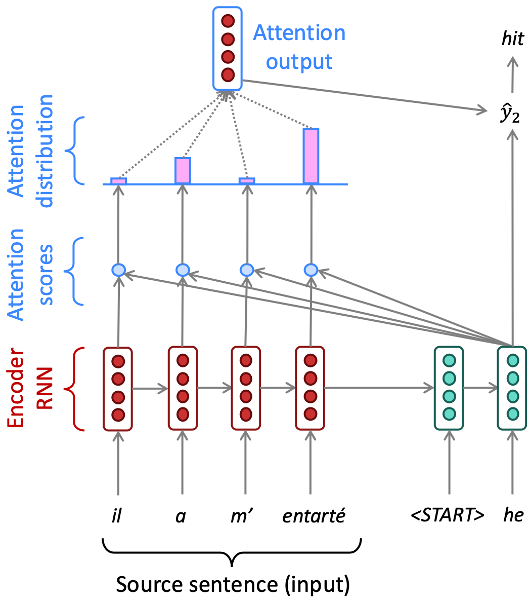
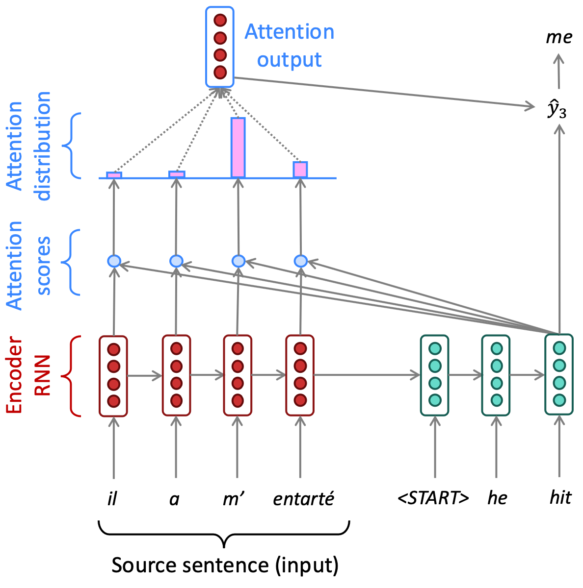
Transformers
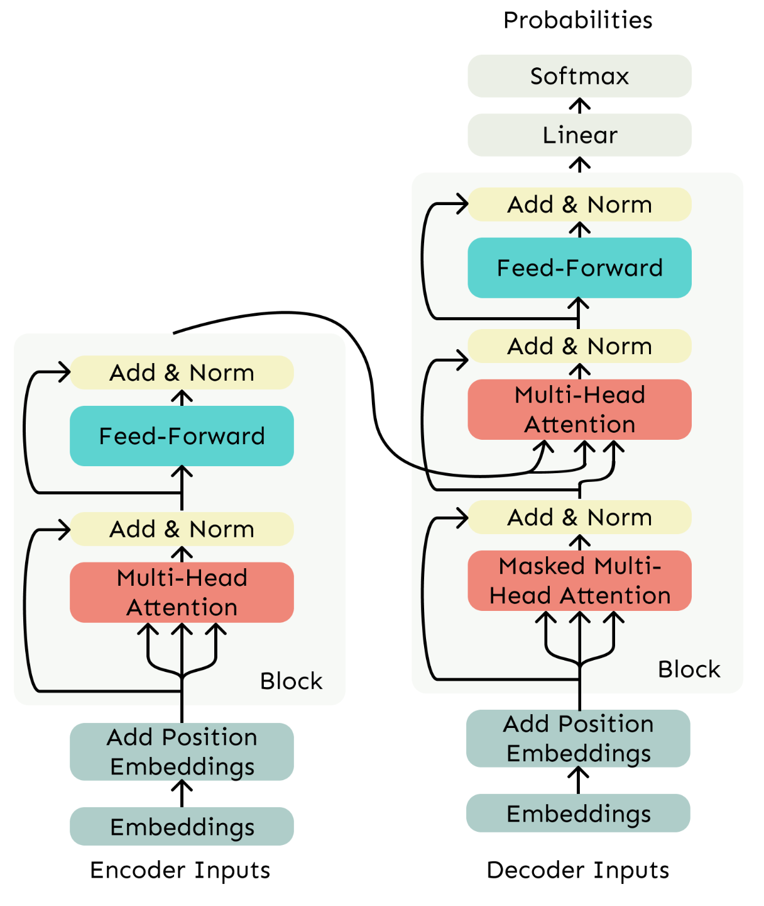
Transformers decoder
- O decodificador Transformer é uma pilha de blocos de decodificadores Transformer.
- Cada bloco consiste em:
- Atenção
- Soma e normalização
- Feed-forward
- Soma e normalização
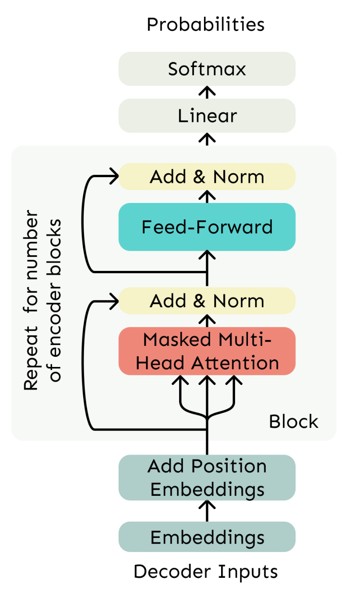
Transformers encoder
- O encoder Transformer é similar ao decodificador
- Sem a máscara da camada de atenção
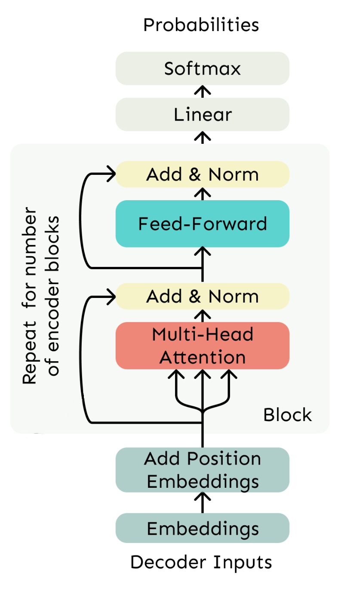
Aprendizado por transferência
- Aprendizado profundo (transformers incluso) funciona muito bem, mas exige grandes volumes de dados anotados.
- Na prática, esses datasets raramente estão disponíveis.
- Poucos dados e poucas anotações.
A Solução
Utilizamos Aprendizado por transferência (transfer learning).
- Treinamos um modelo em um grande dataset genérico.
- Depois, ajustamos o modelo para uma tarefa específica.
Isso é chamado deFine-Tuning.
O que é Aprendizado por transferência?
Aprendizado por transferência consiste em reutilizar o conhecimento aprendido em uma tarefa para resolver outra tarefa semelhante.
Em vez de treinar um modelo do zero, aproveitamos parâmetros já aprendidos em grandes bases de dados.
Como funciona?
- Camadas Iniciais
- Detectam padrões genéricos
- Bordas
- Texturas
- Formas simples
- Camadas Profundas
- Aprendem padrões específicos
- Olhos
- Pelagem
- Objetos particulares
Reutilizamos as primeiras camadas e ajustamos apenas as últimas para uma nova tarefa.
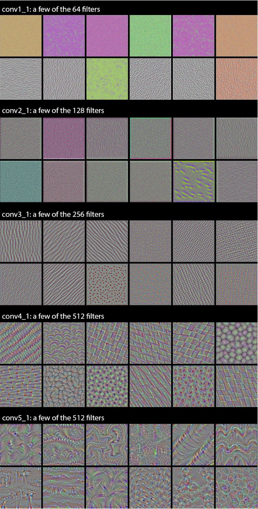
Algoritmo
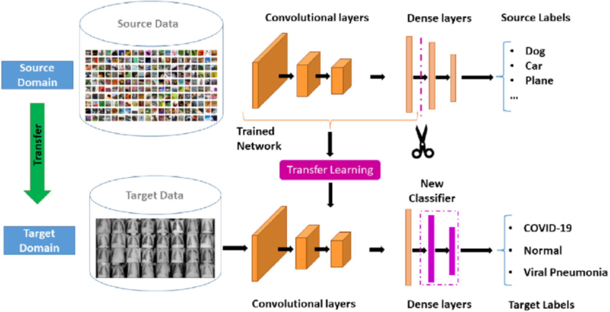
- Iniciar com uma rede pré-treinada.
-
Dividir a rede em duas partes:
- Feature Extractor (camadas congeladas)
- Classificador (camadas treináveis)
- Treinar o classificador com o novo conjunto de dados.
- Opcionalmente, descongelar parte da rede e realizar o fine-tuning com uma taxa de aprendizado menor.
Aprendizado profundo multimodal
O que é Multimodalidade?
Envolve múltiplos modos ou modalidades de informação.
Em NLP, multimodalidade significa combinar texto com uma ou mais modalidades, como imagens, áudio ou fala.
Neste curso, focaremos principalmente em texto + imagens.
Por que Multimodalidade Importa?
- Experiência humana é naturalmente multimodal.
- Internet e aplicações modernas são multimodais.
- Dados multimodais carregam mais informação.
A multimodalidade é uma das principais fronteiras dos modelos fundacionais modernos.
Aplicações Multimodais
Focando em multimodalidade texto \(/to\) imagem:- Geração por recuperação (Image Captioning): imagem ↔ texto
- Geração de legenda (Image Captioning): imagem → texto
- Geração de imagem: texto → imagem
- Visual Question Answering (VQA): imagem + texto → resposta
- Classificação multimodal imagem+texto -> texto
- Complementação de informação: imagem+text -> texto
Aplicações
Multimodalidade é uma das áreas mais ativas da IA atual, embora seja considerada "a próxima grande revolução" há quase uma década - gpt1, 2018.
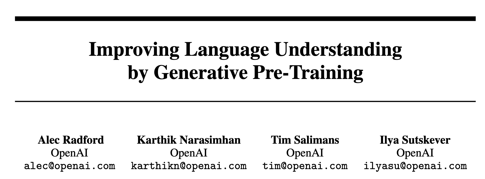
Desafios da Multimodalidade
- Uma modalidade pode dominar as demais.
- Modalidades adicionais podem introduzir ruído.
- Treinar modelos de aprendizado profundo multimodais em larga escala só se tornou viável recentemente.
- Construir sistemas multimodais eficazes é uma tarefa complexa.
GAN para texto
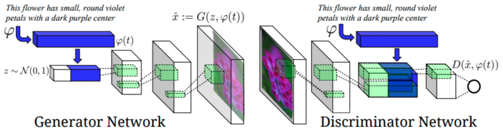
Uma das arquiteturas propostas é uma GAN que utiliza texto como condição:
- A codificação do textoé fornecida tanto ao gerador quanto ao Discriminator.
- Permite que a geração de imagens seja guiada pela descrição textual.
Texto e imagens

Modelos para Image Captioning
O objetivo é gerar uma descrição textual para o conteúdo visual de uma imagem.
Isso exige compreender a imagem, relacionar elementos visuais e textuais e produzir uma sequência de palavras.
Evolução dos Modelos
- Abordagens iniciais utilizavam templates fixos.
- Posteriormente, CNNs passaram a extrair características visuais.
- RNNs e LSTMs tornaram-se o padrão para geração de texto.
Arquitetura Clássica
A imagem é codificada por uma CNN, enquanto a legenda é gerada sequencialmente por uma RNN ou LSTM.
Essa abordagem dominou a área durante vários anos.
Image Captioning
Meshed-Memory Transformer (M², transformer de memória em malha - tradução livre) Proposto em 2020, o Meshed-Memory Transformer representa um avanço importante em Image Captioning.
Seu objetivo é melhorar tanto o encoder visual quanto o decoder textual.
Principais Inovações
- Representações visuais em múltiplos níveis.
- Captura relações locais e globais entre regiões da imagem.
- Utiliza memória persistente para armazenar conhecimento prévio.
Conectividade em Malha
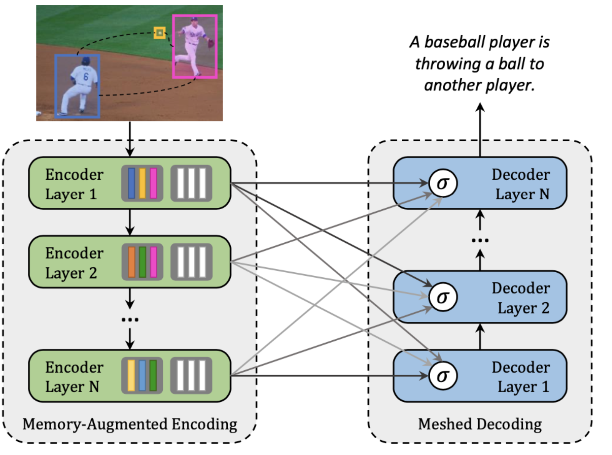
Um mecanismo de gating aprende quanto cada nível visual deve contribuir na geração da legenda.
Isso cria conexões densas entre as camadas do encoder e do decoder.
M² Transformer: Arquitetura Geral
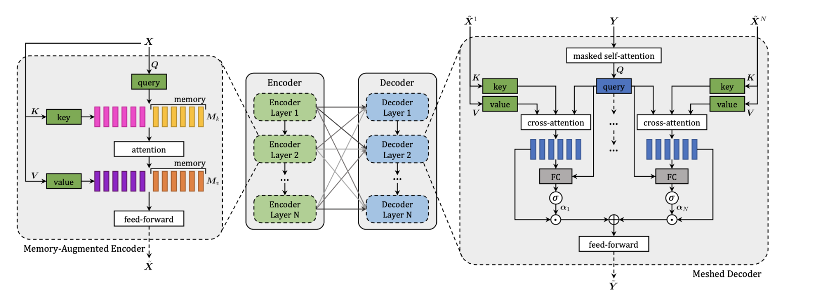
O modelo é composto por dois módulos principais:
- Encoder: processa regiões da imagem.
- Decoder: gera a legenda palavra por palavra.
Ambos possuem múltiplas camadas empilhadas.
Fluxo de Processamento
- A imagem é dividida em regiões visuais.
- O encoder aprende relações entre essas regiões.
- O decoder utiliza essas representações para gerar o texto.
- A legenda é produzida sequencialmente.
Todas as interações entre palavras e regiões visuais são modeladas por atenção.
O encoder incorpora vetores de memória treináveis que armazenam conhecimento prévio.
Isso permite capturar relações visuais além das presentes na imagem.
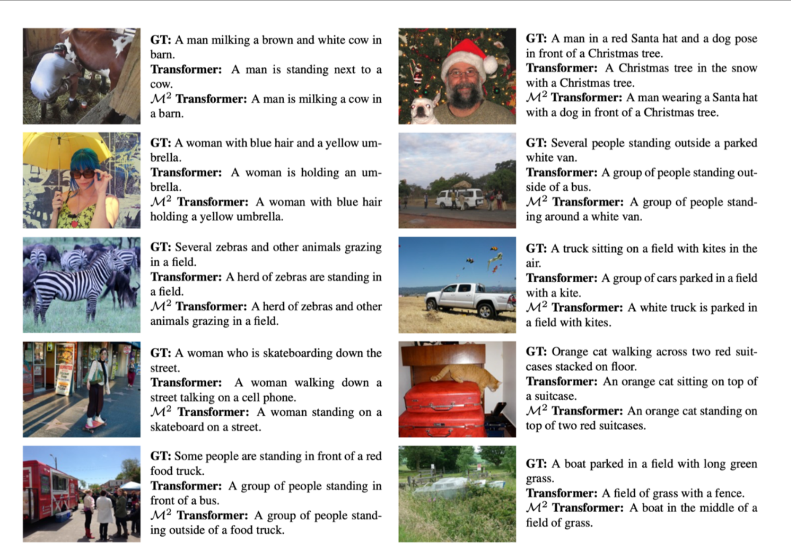
O Conceito de Difusão
A ideia de difusão tem origem na física:
- Corresponde ao processo de difusão de partículas de um fluido em outro.
- Normalmente possui caráter unidirecional — não pode ser revertido.
- Sohl-Dickstein et al. (2015) mostraram que, sob certas condições, a reversão é possível.
Difusão como Cadeia de Markov
Se o processo de difusão for modelado como uma cadeia de Markov com ruído gaussiano adicionado em passos consecutivos, é possível aprender a revertê-lo.
Esse processo reverso é exatamente como o modelo gera imagens a partir de ruído aleatório puro.
Processo de Difusão Progressiva
A cadeia de Markov parte de x₀ e adiciona ruído gaussiano em t passos:
- A distribuição no passo t é condicionada no passo anterior xt−1.
- O parâmetro (1 − αt) controla a magnitude do ruído adicionado em cada passo.
- Após t passos, os dados tornam-se ruído puro.
Processo Reverso Aprendido
Para reconstruir xt−1 a partir de xt, o modelo aprende a estimar a distribuição dos passos anteriores:
- A distribuição reversa é aproximada por uma gaussiana parametrizada por θ.
- μθ: função de média proposta por Ho et al. (2020).
- Σθ: função de variância aprendida.
Exemplo
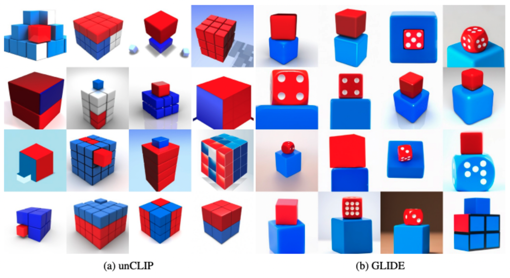
- Entrada de texto: ‘a red cube on top of a blue cube’
- Ramesh, A., Dhariwal, P., Nichol, A., Chu, C., and Chen, M. (2022a). Hierar- chical text-conditional image generation with clip latents
- Chris Manning, CS224N, Natural Language Processing with Deep Learning - https://web.stanford.edu/class/cs224n/
- https://arxiv.org/pdf/1505.04597
- https://arxiv.org/abs/1506.02640
- M2 MIAGE IDA - S1] CM Deep learning
- https://en.wikipedia.org/wiki/Autoencoder#/media/File:VAE_Basic.png
- https://en.wikipedia.org/wiki/Generative_adversarial_network
- https://en.wikipedia.org/wiki/Generative_AI
- https://web.stanford.edu/class/cs224n/slides_w26/cs224n-2026-lecture05-transformers.pdf